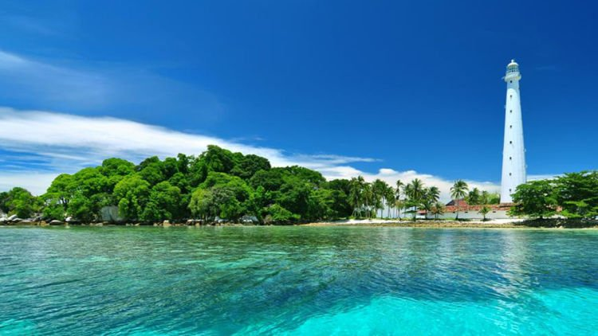

Jelajahilah Pulau Belitung
Pulau Belitung
Seiring dengan melajunya popularitas novel sekaligus film karangan Andrea Hirata, secara tak langsung juga mendongkrak Pulau
Belitung menjadi destinasi alternatif bagi para traveler. Bahkan, tak jarang ...